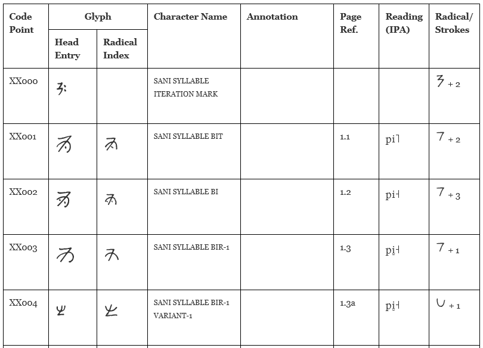

BabelStone Sani Yi is a PUA font covering characters in the Sani Yi script. The font was created from scanned images of the hand-written characters in Yí-Hàn Jiǎnmíng Cídiǎn 彝汉简明词典 [Concise Yi-Chinese Dictionary] (Kunming: Yunnan Minzu Chubanshe, 1984). The quality of the resultant font glyphs is generally quite poor. This font is not intended for use in typesetting Yi text, but was created in order to facilitate work on the encoding of the Sani Yi script in Unicode. The font is licensed under the terms of the SIL Open Font License (OFL).
The font incudes the following 2,888 characters:
The radical index characters correspond to the main and alternative characters in the head entries of the main body of the dictionary, with a few accidental omissions (see Sani Yi Radical Index). The 382 alternative characters in the head entries are written in small size in brackets after the main character. See List of Sani Yi Characters for a list of head entries in the dictionary.

BabelStone Sani Yi is licensed under the SIL Open Font License 1.1, which means you are free to use it for personal or commercial purposes, and to redistribute it by itself or as part of a free or commercial software package, just as long as you do not sell the font on its own. The license also allows you to modify the font in any way you like, as long as the modified font does not use "BabelStone" in its name. Please read the license for details.